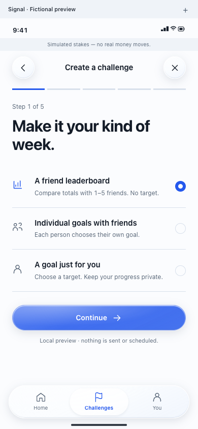

1. Compare the actual screens.
Capture native creation, agreement and detail. Compare them with the current Signal reference and name each gap.
IMPLEMENTATION PLAN · SEPTEMBER 20, 2026
Keep Signal. Replace the long form with visual choices and large, editable numbers. Show help when it is needed.
Direct Personal entry skips “Who?” because you already chose.
Tap the goal or amount to edit it. Keep units and dates beside it.
A heading, controls and one clear next button. No paragraphs to work through.
Show the important facts. Keep every rule available in a named disclosure.
Layout proposal with fictional values. This does not read activity, create a goal or change the app. The full rules below are a preview excerpt; the app will retain its complete agreement.
THE FLOW
Generic challenge creation adds the type choice first. A direct Personal entry starts here.
Capture native creation, agreement and detail. Compare them with the current Signal reference and name each gap.
Use one draft across the flow. Back keeps your choices; changing agreed details requires fresh review.
Apply the same hierarchy to confirmation, detail and history. Check shared friend creation and the surrounding tabs.
Test the actions, inspect every step and compare screenshots. Prepare an identified Staging build without interrupting the current phone session.
SAME DESIGN, LESS WORK
Confirmed today: the current creation code is one scrolling form. The Signal theme is already connected. The exact screen on the owner's phone was not captured in this investigation.

DONE MEANS
Values and controls lead. Rules remain complete and available without filling every step.
No lost draft, stale consent, duplicate goal or false success.
Light, dark, keyboard and supported solid fallbacks have actual native screenshots.
Matched screens, remaining gaps and device checks stay separate. A theme rename is not visual acceptance.
NEW CODEX CHAT
It includes the visual requirements, source files, current work to preserve, tests and completion checks.
# Signal UI fidelity follow-through Prepared September 20, 2026. **Proposed implementation plan; no native UI changes or new acceptance results are established by this document.** The owner asked for a plan and a prompt after the installed Staging personal-goal flow did not look like the agreed Signal design. The owner's follow-up is explicit: creation feels like a spreadsheet with too much writing. Use visuals, large numbers and buttons. Use the `unslop` skill for copy. Keep Signal; Mobbin is optional help for a specific interaction, not a reason to start another design exploration. ## Outcome Make creating and reviewing a personal goal match the approved Signal design: deliberate steps, strong hierarchy, open aligned rows, large editable numbers, clear actions and a readable agreement. Apply shared component fixes to friend creation and check the surrounding app for visible inconsistencies. The design direction is already selected. Reuse [Signal's design specification](../../outputs/design/2026-09-13-clickable-app-alternate/DESIGN.md), the current [interactive reference](../../outputs/design/2026-09-13-clickable-app-alternate/index.html), its `signal.js` / CSS and material review. Inspect the rendered reference; individual saved screenshots can predate later refinements. Browser sample rules, dates, scores, names and unavailable features are not product authority. ## What is established and what is not - Ordinary launch selects `SignalProductShell`. `SignalTheme.swift` implements the adopted semantic palette and system typography. The September 13 migration removed active Cobalt rendering and custom fonts; its dated checks remain valid. - `ChallengeV1Create` in `ChallengeV1EntryViews.swift` puts type/activity, dates, amount, goal and agreement in one scrolling form. The approved reference's `create()` is a five-stage journey with choice rows, progress and Continue. This is a confirmed interaction/composition gap, not proof of a Cobalt fallback. - Today's [device receipt](../../outputs/reports/2026-09-20-private-device-goal.md) records a fresh ordinary Staging installation. This investigation did not capture the owner's current screen or independently read the installed binary. - The inspection checkout was `codex/private-goal-consent` at `7bca11c`, with uncommitted goal/readiness/recovery work. Meanwhile local `main` advanced to `dbc769c`, including D141's optional received-score leaderboards. These are different source states. Reinspect them at implementation start; do not use the earlier "all leaderboards unavailable" rule as a blanket new requirement. - Broader native/reference differences require a rendered audit. Do not call every screen wrong, or every screen complete, from the creation finding alone. ## Scope and sequence ### 1. Establish a safe, current baseline and capture the gaps Read `AGENTS.md`, `PROJECT_MEMORY.md`, `README.md`, `docs/WORKING_BASELINE.md`, `docs/BUSINESS_MODEL.md`, `docs/BETA_IMPLEMENTATION_PLAN.md`, `PLAN.md`, the latest decisions, `docs/COPY.md`, the Signal migration contract and current private-device receipt. Read D141 / `docs/RECEIVED_LEADERBOARD_V2.md` when present. Use a short-lived branch from current local `main`. Preserve all in-flight work; do not switch, reset, stash or commit someone else's dirty checkout. If the phone-fix branch is still active, do independent reference/component work in an isolated worktree. Integrate its completed fixes through their owning task before final acceptance; do not declare an older-baseline candidate ready. Capture real native screenshots with fictional local data and inspect the current browser reference. Make a route checklist with **matches / differs / unverified**, the smallest correction, and an image or source pointer: - Primary: new Personal create, activity check, agreement, saved confirmation, scheduled/active detail, review and history. - Shared regression boundary: friend create, invitations/agreement, community entry, Home, Challenges and You. - Secondary audit: sign-in/onboarding, account/Health/support/privacy screens and retained **Existing challenges** access. Record remaining independent redesigns separately rather than silently expanding this task. **Exit:** concrete before-images and a bounded correction list. No new visual exploration or unsupported claim about the owner's installed screen. ### 2. Let people choose and adjust, with little reading Each ordinary step has one short question, one main control and one advancing button. Use the existing Signal system for all of them: - **Choose:** icon-and-label rows or buttons with an obvious selected state. Avoid stacked dropdowns and explanatory paragraphs. - **Set a goal:** a large editable number with its unit and period, such as **50,000 · steps total** or **25:00 · time to beat** for a chosen whole run. These are layout examples, not new defaults or recommendations. Tapping the number opens appropriate native entry; accessible adjustment controls can help. Preserve precise entry for every valid value. Reuse a genuine optional activity suggestion only when the current app supplies one. - **Choose dates:** a large duration, a compact calendar and a clear start/end span. Show a readable zone label; changing it opens a selector rather than exposing an `Area/City` text field. Preserve the existing valid zone choices and exact persisted identifier. - **Set the amount:** a large editable **$20** and the existing short simulation disclosure. Preserve the default/range. Do not add higher-amount suggestions, reward styling or a slider that makes precision difficult. - **Review:** show the chosen goal, dates and amount as a short visual summary. Keep the activity status and consent action visible. Put complete rules and explanations behind clearly named disclosures, without hiding the facts needed for consent. Never show all rules as an expanded wall of text by default. Before review, aim for a heading, labels and at most one short helper sentence per decision. This is a writing rule, not a reason to hide an error, necessary health-source limit or consent fact. Show help when requested or needed. Keep accessibility labels complete even when visible copy is short. Do not merely spread the existing paragraphs over five screens. Run `unslop` on new explanatory/UI copy and this handoff. Remove repeated disclosures, vague instructions and technical prose. `docs/COPY.md` and exact historical consent still control. Mobbin may help with a particular number-entry or choice interaction if Signal leaves it unresolved; inspect actual references and retain Signal's visual system. ### 3. Keep one draft across the creation stages Use one draft owner for the full presentation and small native step views: | Stage | Experience | Behavior retained | | --- | --- | --- | | 1 — Type | Full-width choice rows; preselect a direct entry's type | Existing product availability and version selection; no silent switch from Personal to friends | | 2 — Activity and goal | Activity buttons, large goal number/unit and optional suggestion | Existing parsers/units, timed-distance input, deliberate suggestion selection, no leaderboard target | | 3 — Dates | Large duration, calendar, readable time zone and start/end span | Current server-time policy: 2–30-day lead, 1–30 full local days; exact frozen boundaries and DST behavior | | 4 — Amount | Large amount entry and immediate simulation disclosure | Existing whole-dollar $1–$500 range and $20 default; integer cents, no real funds | | 5 — Review | Visual summary, collapsed complete rules, activity status and explicit consent | Existing preview/digest, current readiness policy and exact submission/recovery semantics | The generic Create action has five stages. Direct Personal entry skips the already answered Type stage and shows progress for the remaining four stages. Back from the first displayed stage returns to its caller. Back and Close are always understandable. A single primary action advances each stage; the final action clearly creates the goal. Reuse native pickers and accessible selection controls instead of recreating browser widgets or chrome. Preserve draft values while going backward. Initialize default dates once per draft; returning to a step must not overwrite choices. If changing type or activity invalidates an input, clear that dependent input explicitly while retaining unrelated dates/amount. Keep the current seven-day default unless newer accepted source intentionally changes it. Moving between child steps must not trigger whole-flow `onDisappear` cleanup. Keep the draft identity, actor/session fencing, query cancellation and pending request ownership in the flow's actual lifetime. Ignore late responses from an earlier draft or account. Terms edits invalidate the preview, consent and only the readiness context required by the current accepted Health implementation. Do not reinstate obsolete readiness rules while reorganizing the screen. ### 4. Finish review, confirmation and the connected Personal screens Use Signal's existing tokens, 24-point content alignment, semantic system type, tabular metrics, ruled rows and native action/navigation materials. Keep static facts, plots, totals and rules opaque. Retain approved opaque accent bands where the current reference specifies them; Signal itself uses blue. Provide the existing solid fallback and accessibility behavior on supported older iOS. Review starts with goal, source meaning, start/end/time zone, simulated amount, possible outcomes and exit/review information. Put every existing rule in an accessible full-rules disclosure where appropriate; preserve historical consent verbatim. Read `docs/COPY.md` for every new/changed string. The activity check must remain reachable, retain draft input on failure and explain the next step. Neither opening review nor completing a permission request grants consent. Show success only after the server receipt is accepted. Present the recorded goal and dates, its scheduled/active state and a clear route to its detail. Reuse the existing receipt/detail model; never invent a successful save, a balance, daily activity, a missed goal or a result from missing data. Avoid money-related celebration and prompts to increase the amount. Fix hierarchy/spacing/action inconsistencies in the connected Personal detail, review and history screens found in stage 1. Carry shared component changes through reachable consumers. Preserve existing privacy, safe exits, invitations, community disclosure and all retained Personal/Solo/charity agreements. ### 5. Verify behavior and visual fidelity on the integrated source Build Debug, Staging and Release simulator products using the actual project and schemes. Run `scripts/check-iphone-product.py`. Use existing explicit fictional fixtures or a unique disposable loopback stack; never reset another task's database, submit the owner's goal or enable hosted features to get screenshots. Update focused tests in `ChallengeV1UITests`, `ChallengeHealthSignalUITests` and the affected native units. Preserve existing assertions while adapting controls. Cover stage navigation/value retention, all four Personal metric inputs, invalid-input recovery, draft edits requiring fresh review/consent, stale async preview rejection, account changes, readiness recovery and duplicate/pending submit handling. Reuse the existing ordinary-app and synthetic Health journeys. Smoke shared friend creation with current policy versions, existing agreements and legacy access. Broaden testing only for actual failures or changed behavior; the full weekly/backend/release matrix is not a default UI prerequisite. Render the whole new sequence plus confirmation/detail in these targeted cases: - Standard light/dark on the primary iPhone simulator. - Compact iPhone, large accessibility text, long values and the keyboard open. - Current material appearance and supported iOS 18 solid fallback. - Reduce Transparency, Increase Contrast and Reduce Motion where affected. - Loading, empty activity, denied/unavailable activity, offline/retry, pending submission and actual saved confirmation, using controlled fictional states. Inspect reading order, accessible labels/selection/progress, 44-point targets, focus after navigation/error, scroll/safe-area clearance and accessible dismissal. Record which checks are automated and which need human VoiceOver/device review. Do not treat screenshots as proof of human accessibility acceptance. Compare native screenshots beside the corresponding current Signal reference, using comparable content. Explain native-control or product-rule differences. A renamed type, matching palette, isolated preview or passing test count does not establish fidelity. Keep remaining gaps explicit by route. ### 6. Deliver, record and prepare the real-device follow-up Record source commit, configurations, actual checks/failures, screenshot paths, matched routes and remaining physical/human checks in a dated report. Update the migration contract with this narrower fidelity result; preserve dated migration evidence. Commit completed authorized changes and merge into local `main` after integrating concurrent accepted work. Do not push or deploy. Prepare the corrected Staging build and identify its source/configuration and bundle. Do not overwrite or relaunch the owner's phone mid-test. An in-place device update and visual walkthrough are a separate coordinated step; preserve the app container, session, saved goals and pending requests. Do not uninstall. Do not report that the owner has the fix until installation is recorded. ## Completion criteria The task is locally complete when the ordinary creation route uses the staged flow, the connected Personal journey has been visually compared and corrected, its consequential behavior still passes focused checks, and shared routes have no introduced regression. Unreviewed routes and device/human acceptance remain explicit. The repository's old "migration complete" statement must not be reused as evidence that this work has already happened. Local presentation work does not change source policies, outcome/allocation rules, consent versions, transport gates, hosted configuration, money, release scope or historical data. No new backend migration is expected. The [new-chat implementation prompt](../SIGNAL_UI_FIDELITY_IMPLEMENTATION_PROMPT.md) is ready to copy. This plan records recommendations, not owner acceptance of an implementation or permission to interrupt the live phone session.